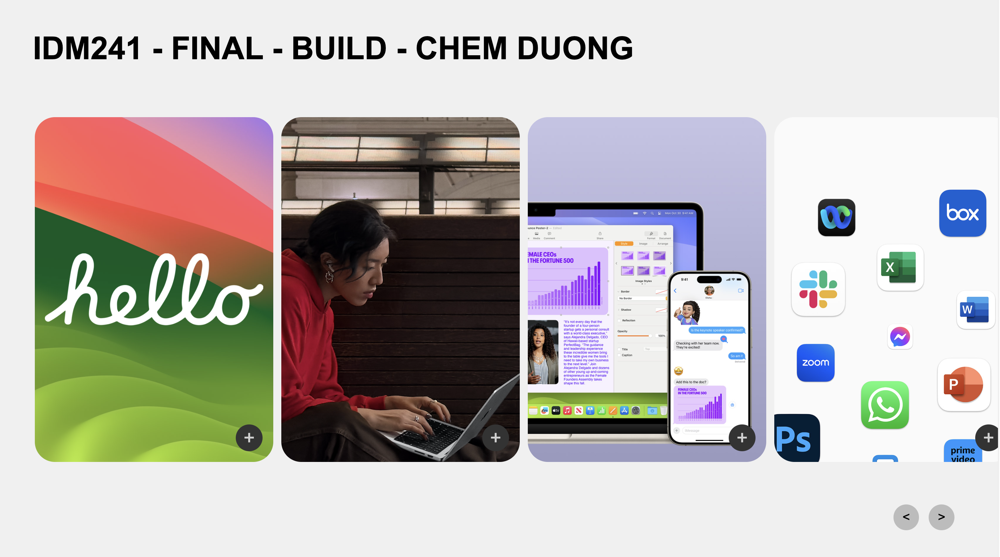
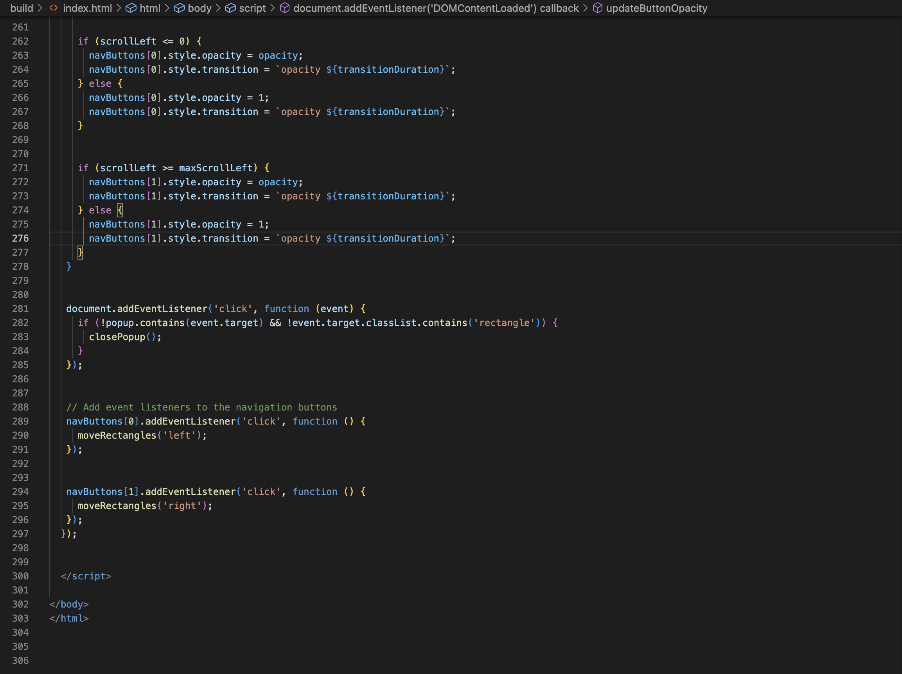
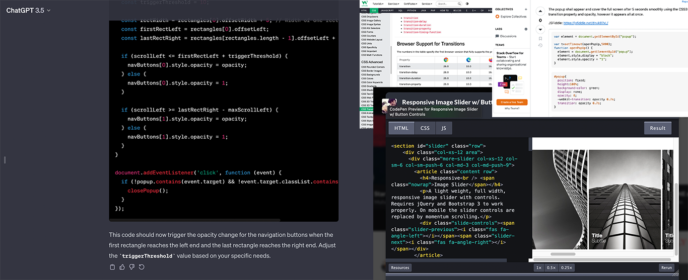
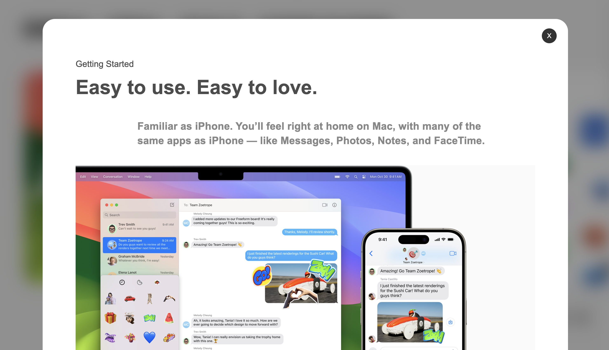

Starting the IDM241 trip was like going to a place where design and code came together to create art. The course was enlightening at its core, revealing the importance of microinteractions in the field of user interface and user experience development. Through a meticulous exploration of triggers, rules, feedback, and Loops&Modes, we delved into the essence of these micro moments that weave together to form the fabric of a memorable user experience.
The class wasn't just about learning how to design and code; it also went into great detail about microinteractions, which are small but important details that users often don't notice but have a big impact on how they see things. Going through triggers, rules, feedback, and loops/modes analytically wasn't just an academic exercise; it was a useful way to learn about how every click, scroll, and interaction works.
In order to help us understand microinteractions, the course set clear goals for what we needed to learn. More than anything else, we had to be able to find and create meaningful and useful microinteractions. The goal wasn't just to make a design look nice; ensuring that each microinteraction served a distinct role in enhancing the overall user experience.
A lot of attention was paid to how to use front-end programming languages correctly. A significant emphasis was placed on the proper usage of front-end scripting languages. It wasn't just about coding for the sake of it; it was about wielding scripting languages as tools to breathe life into our design concepts. HTML, CSS, and JS weren't just strings of characters; they were the instruments through which we composed the harmonies of meaningful microinteractions.

Let us now discuss the obstacles that we face. It wasn't only about the design the challenge for me, and I'm sure it was for many other people as well. Programming was the topic at hand. Certainly, I became used to HTML, CSS, and JS by employing them in the process of developing microinteractions; yet, as the proverb goes, the devil is in the details. There were a lot of minute details that required careful attention, such as hover states and active states. Writing code was not the only thing that needed to be done; it was also necessary to carefully sculpt each pixel and make certain that every interaction, regardless of how minor it may be, contributed to the broader story.
During my assignment through the Alpha, Beta, and Final stages, it seemed like I was on a rollercoaster with unexpected turns and twists. Finding, creating, and constructing microinteractions was not a simple task by any stretch of the imagination. As if that weren't enough, there was also the excitement of bringing our inventions to life through the use of HTML, CSS and JS. When it came to the user journey, it was not simply about code; rather, it was about weaving a narrative into the experience, where each click was important.
On the other hand, the difficulties did not end there. There was a whole new level of difficulty involved in comprehending microinteractions and making sense of the analysis, which included Triggers, Rules, Feedback, Loops, and Modes.

Let's get into the specifics of how I made my way through the Alpha, Beta, and Final steps of microinteractions. My journey began with a deep dive into the internet. I searched through many websites to find a couple of microinteractions that were perfect and went smoothly. In my opinion, the goal was to pinpoint interactions that not only aesthetically but also provided an nice user experience.
Research helped me find my way. I really have to put all of myself in the microinteractions of different websites before starting each task. It felt like a treasure hunt to find the best, easiest, and most perfect encounters that got all the assignment requirements and also satisfy me. Once I decided on an option, I began the analysis process, which divided the details into four separate groups: Triggers, Rules, Feedback, and Loops/Modes.
The real challenge started once I had carefully split these parts down for each work. For these studies to become real, useful microinteractions, it was time. I started doing study on CodePen, YouTube, W3Schools, Stack Overflow, and other sites, learning from code snippets, answers, and programming tips. By getting help from other people, I learned how to code microinteractions from beginning, or even advanced version of them.
Adjusting, changing, debugging, and making things better were all part of the writing process. ChatGPT became my virtual debugging friend and helped me when I wasn't sure what to do. Once the long coding session was over, the code was carefully checked and cleaned up before it was sent in.
Basically, the process wasn't just about writing code; it was about making the small details of microinteractions that had been studied into a real, working thing.

The solutions that came out of the Alpha, Beta, and Final stages. Each one shows how my skills in creating microinteractions have grown and improved.
Alpha - On-Scroll Logo:
I started to understand and build a single microinteraction during the Alpha process. My decision was to make a logo that rotates as you scroll. I was learned to carefully looked at triggers, rules, feedback, and loops/modes, which led to a sleek and interesting on-scroll logo that made the experience more dynamic. Also I got feedback from Professors and Peers to develop it.
Beta - Behance "Appreciate" Button:
The Behance "Appreciate" button was a more difficult task when I moved into the Beta phase. This microinteraction unfolded with three triggers, adding layers of intricacy to the design. This time, the learning curve got steeper as the microinteraction grew to a middle level of complexity. The research process had to be carefully used on the triggers, whether they were clicks, hovers, or active states.
Final - Apple Carousel:
All the lessons learned in the Alpha and Beta stages came together in the Final process to make a sophisticated Apple carousel. This small interaction was more than just rotates and clicks; it included scrolls, hovers, actives, clicks, and button interactions. It was hard in the Alpha and Beta stages, but they helped build up to this big finale. Also for this one, also need the most programming skills and I actually got into trouble with coding for the Final.

Now the credits are rolling. It wasn't enough to just meet deadlines and submitting homework; we had to crush the goals of the class we set as well. We tracked the effect and got feedback from Professors and Peers. This wasn't just for show; the lessons we learned were like extra scenes after the credits; they helped us figure out what worked, what didn't, and how to get better next time.
To sum it up, IDM241 taught me more about microinteractions and how to use them in my future projects and portfolio.